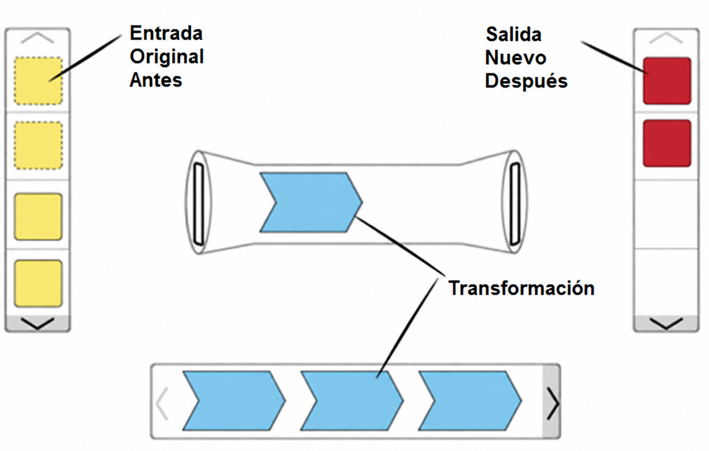

Integrantes: __________________________________________________________
Trabaja en dupla. Investiga qué hacen tres herramientas y prepara una explicación de una de ellas para ponerla a prueba con el grupo.
Abre el simulador con el enlace que indique la docente. Elige la pantalla Patrones y el tubo que admite una sola herramienta.

La imagen muestra dónde están la entrada, la herramienta y la salida.
1 Primera exploración
1. Introduce una imagen en el tubo sin colocar ninguna herramienta. Observa qué sale.
2. Coloca una herramienta y vuelve a introducir la misma imagen. ¿Qué observas?
3. Explora otras herramientas y comenta con tu compañero qué cambios encuentras. No necesitas registrar cada ensayo.
2 Investiga y registra
- Elige con tu compañero tres herramientas diferentes, sin utilizar las que tienen signo de pregunta. Investiga cada una con dos imágenes distintas.
- Escribe qué hace la herramienta. Puedes dibujar o describir las imágenes.
- Copia este registro en la cuadernola y deja espacio para tus explicaciones.
Herramienta | Primera prueba | Segunda prueba | Qué hace la herramienta |
1 | |||
2 | |||
3 |
3 Ponemos a prueba una explicación
Prepara con tu compañero una explicación de una herramienta para presentarla al grupo, sin decir cuál es. Elige también una imagen de entrada para que los demás puedan anticipar la salida.
Durante la puesta en común:
a) Escucha la explicación de la dupla y observa la imagen de entrada propuesta.
b) Anticipa la salida y explica por qué la esperas. Espera a la comprobación para probarla en tu computadora.
c) Observa la prueba en la pantalla del salón. Comprueba en tu computadora si el resultado confirma tu anticipación o la refuta.
Comenta si la explicación permite anticipar la salida o si necesita alguna precisión.
Anota en la cuadernola una precisión que haya surgido al poner a prueba la explicación, si la hubo.
4 Cierre individual
Elige una herramienta de las que investigaste. Describe qué le ocurre a una imagen al atravesarla y muestra un ejemplo de entrada y salida.
Nombre: _____________________________________________________________
Herramienta elegida: __________________________________________________
Mi explicación
________________________________________________________________________
________________________________________________________________________
________________________________________________________________________
Mi ejemplo de entrada y salida
________________________________________________________________________
________________________________________________________________________
________________________________________________________________________